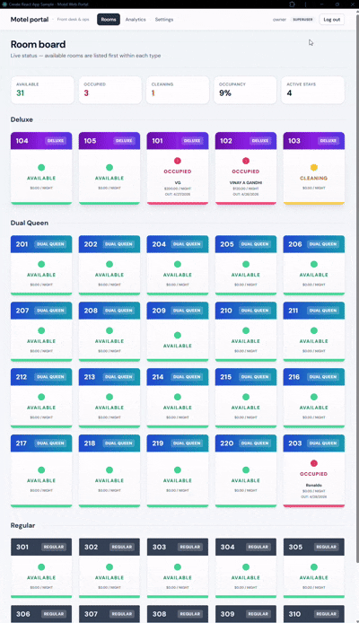

Portfolio · GitHub Pages
AI systems, factories, and EV platforms
This site is the story: positioning, flagship systems, and links to evidence. GitHub holds code and README case studies. The interactive lab hosts decks, EV references, and browser tools — explore, do not duplicate here.
Factory AI platform · Apr–Dec 2026
Primary execution focus: observability through analytics and streaming, with document-AI integration toward year end.
-
Foundation
Observability stack, logs and metrics baseline.
-
Signals & detection
Anomaly and health signals feeding the pipeline.
-
Streaming & gateway
Go services, NATS or equivalent event paths.
-
Analytics store
ClickHouse (or similar) for time-series and rollups.
-
Integrate & polish
Document and multimodal reasoning tied into the platform.
Flagship systems
Curated highlights aligned with the portfolio overview. External repo links open in a new tab.
Flagship
Factory AI Platform
In progressEnd-to-end industrial AI: observability → anomaly detection → streaming → analytics → AI. Primary execution focus Apr–Dec 2026.
Execution arc summarized above.
AEGIS
Production-styleManufacturing correlation engine — PLC telemetry, MES work orders, streaming ML inference.
SentinelFlow
Production-styleIIoT telemetry — PLCs, OPC UA, Kafka, GraphQL for digital-twin style dashboards.
Automotive visual QA engine
Research / edgeEdge CLIP, AWS serverless path, MES-style FastAPI.
Market Mood Ring
Research / dataKafka, Flink, Postgres, Ollama — real-time finance + RAG analyst.
More on GitHub
Additional public work includes CLaimLens, healthcare analytics, LLSPIN, crypto data ETL, Overdrive OTA and key provisioning, OTA firmware verification, RAG and agent experiments, FARM ToDo app, Weather WebApp, SmartFound, HabitArc, and more. Browse the full list on GitHub. Deck-style pages (Homelab, CVML, Monitron) and EV protocol / cybersecurity HTML live only in the interactive lab → Decks & EV; learning tools under Tools & simulators.
Product demo

Motel Web Portal — UI walkthrough (hosted on this site). Source: Motel-web-portal (repo may be private).
Interactive lab shortcuts
Homelab, CVML, Monitron, and EV reference pages live on the interactive lab under Decks & EV. DSA, glossaries, uv, and simulators are under Tools. This site only links there — no duplicate HTML on the portfolio domain.
Open interactive lab
Learn on this site
Illustrated theory and programming tracks stay in-repo (no duplicate HTML).
Theory
ML & AI theory hub
Hub page for all illustrated theory topics.
Data engineering
Pipelines, warehouses, medallion, batch vs stream.
Classical ML
Bias–variance, validation, metrics, ensembles.
Deep learning
Layers, activations, training loop.
Applied AI engineering
Prototype to production, evaluation, roles.
RAG vs fine-tuning
When to retrieve vs update weights.
MLOps
Registry, pipelines, deploy, monitor.
LLMOps
Prompts, RAG, eval, cost, safety.
DevOps
CI/CD, IaC, observability.
Programming